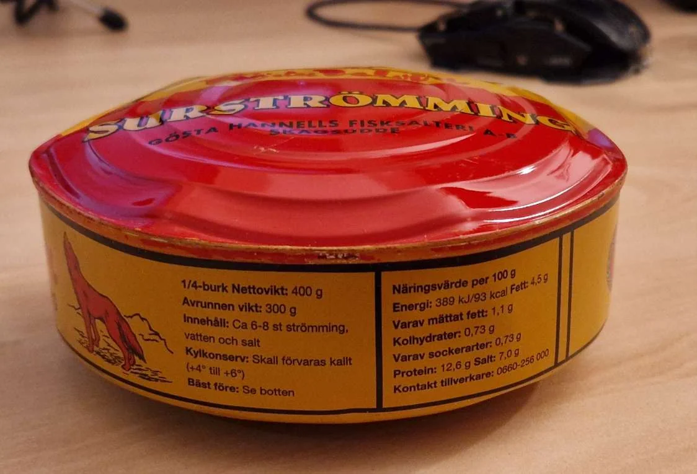
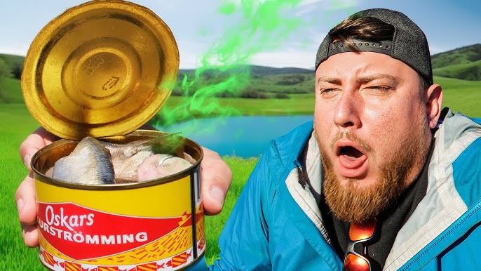

Sold as a canned food, surstromming is a traditional Swedish fermented herring dish. 1 2
It is notorious and famous for its strong, pungent, lingering odour that travels fast and wide. 1 2
Fermentation continues when canned, so bulging cans and a hiss on opening are normal. However, this may disguise packaging error, and its strong odour makes distinguishing problems even harder. Extra caution needs to be taken to examine the seal. 2 3
It carries the general nutritional value of oily fish -- protein and marine fats; however, product-specific health claims are thin. 4
It contains large volumes of salt. 2 4